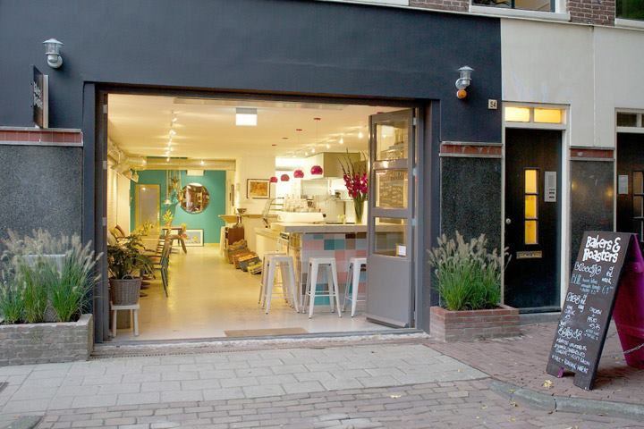
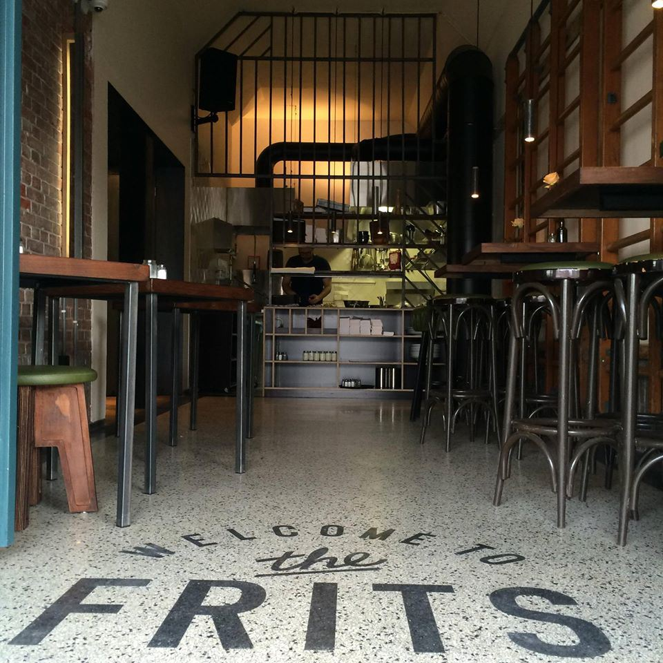

Amsterdam 48 hours, girlfriend by my side, emptying patisseries hanging in Anne's house and getting high as a kite .

Scoring a central hotel can be difficult, and price usually determines quality. We got a sweet deal and stayed in the Best Western Apollo Museumhotel Amsterdam located @ Pieter Cornelisz Hooftstraat 2 1071 BX. Such good location aright beside the Rijksmuseum.

Amsterdam is relatively small, and easy to walk around, the best thing you can do in my opinion is sort out bike rental, everyone cycles around Amsterdam, its quick, cheap and safe as the city is very bike friendly, and more importantly you will feel like a local which is key to the experience when traveling.
So the three main objectives. 1) See the Anne Frank's Gaff , 2) Visit the Rijksmuseum, and 3) Explore the Red Light District.
Anne Frank's Gaff
Historical house and biographical museum dedicated to the jewish wartime diarist Anne Frank. The house is tiny, has lots of steps and it a tourist hot spot, you can expect to be waiting a few hours to get in, so if you are going to visit go very early and beat the crowd, also get your tickets online! Located @ Prinsengracht 263-267, 1016 GV.Rijksmuseum
National museum dedicated to arts and history in Amsterdam, you can view some masterpieces by Rembrandt, Frans Hals, and Johannes Vermeer. This place is huge and can provide a break from the highs of Amsterdam, certainly worth a visit if not for the contents, then for the architecture. Costs €17.50, open from 9am till 5pm. Located @ Museumstraat 1, 1071 XX.Red Light District
We live in a weird world, I found it difficult to wrap my head around this place, but in saying that I do think its worth a visit. The sex shops are a laugh and you can pick up willy mugs and ashtrays for friends and family back home. Also dont take pictures of the girls in the windows you may get your camera smashed by bouncers. Located @ De Wallen .Cafe
When looking for a cafe (the normal kind not the Amsterdam versions) there are a tonne of really great spots, and as usual I use cafes to chill, mooch free wifi, and plan then next few hours. If you are looking for a nice bite to eat street food is all over Amsterdam. But for something really nice hit Bakers & Roasters Located @ Eerste Jacob van Campenstraat 54
 Bakers & Roasters - is the dreamFew lunch spots worth checking out; Singel 404 @ 1016 AK, eat a sandwich under the sun. They have about every topping you can imagine. Head over to Café Nielsen’s for a club sandwich located @ Berenstraat 19, 1016 GG, or stop by Soup en Zo for something light located @ Jodenbreestraat 94a.

Dinner
Dinner... well that side was very weak on this trip, embarrassingly enough Hard Rock Cafe was on the list... but its ok as this is a little ritual for me and one of the places I always visit to grab a beer, some ribs and an overpriced pint glass with the city name.
Hit a speakeasy, there are loads of cool bars in Amsterdam, but try something different, It’s all a matter of knowing where to go, Door 74 is cool, all you have to do is find the hidden entrance. Located @ Reguliersdwarsstraat.
Have stroopwafel it's a cookie that will blow your mind, they are sold all over the place at the Albert Cuyp market, Dutch food specialities such as poffertjes (pancakes served with powdered sugar), bitterballen (fried meatballs of ghoulash or other fillings) and cheese (gouda is the local speciality).
Hit up Beer & Burgers at Frits Located @ Jan Evertsenstraat 135 nice burgers good beers real casual and perfect for the traveler hopping around the city from bar to club.
 Beer & Burgers.Nightlife
Amsterdam, is so varied, you can chill in old man bars, hipster pubs, smoke your brains out in cafes and wander around the city aimlessly for hours giggling like school girls (guilty). Or you can hit super clubs that cater for every taste in music. Amsterdam is Europe's adult playground, its stag and hen central, college mystery tour mecca . But most importantly Amsterdam can be what you want it to be; cultured, young, historical, exciting, experimental whatever you want it to be for you.
Know someone going to Amsterdam share this article with them.